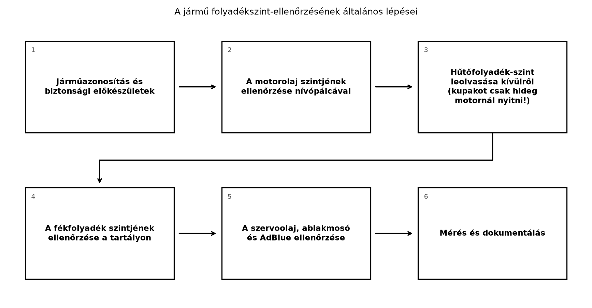

Egy ügyfél beáll a műhelybe: „Olajcsere kellene, meg egy átvizsgálás, mert világít a kis kulcs jel a műszerfalon.” A szerelő a kulcsra felkészülve kinyitja a motorháztetőt, és nem csak az olajat nézi meg: ellenőrzi a hűtőfolyadékot, a fékfolyadékot, a szervoolajat, az ablakmosót és a dízelnél az AdBlue-t is. Miért? Mert a jármű megbízható üzeme és a műszaki vizsgára való felkészítés is azon múlik, hogy a folyadékok a gyártói előírás szerinti szinten és minőségben álljanak rendelkezésre. Egy alacsony motorolajszint tönkreteheti a motort, egy elfolyó fékfolyadék balesetet okozhat, egy rosszul kevert hűtőfolyadék télen megfagyhat. Ebben az alfejezetben a műhelyben naponta végzett ápolási – szintellenőrzési és alapvető szervizműveleteket tanuljuk meg, valamint az olajcsere és szűrőcsere technológiáját a helyes hulladékkezeléssel együtt.
Képzeljünk el egy modern, önhordó karosszériás autót a tanműhely emelőjén, a motorháztető felnyitva. A motortérben a nívópálca sárga fogantyúja, a hűtőfolyadék-kiegyenlítő tartály áttetsző oldalfala MIN–MAX jelöléssel, a fékfolyadék-tartály a fékrásegítő felett, a szervoolaj-tartály a kormányszervo mögött, valamint az ablakmosó kék kupakja jól látható. Az emelő alatt a motor alján a leeresztő csavar, az olajszűrő háza és a környezetvédelmi gyűjtőedény helyezkedik el. Az ellenőrzés általános lépéseit mutatja az alábbi folyamatábra:

A diagram a gyakorlatban használt ellenőrzési sorrendet mutatja: először azonosítjuk a járművet (hogy a megfelelő folyadékokat vegyük elő), majd a biztonsági feltételeket biztosítjuk, ezután a motorolajjal kezdjük, mert az a legkritikusabb, és így haladunk a többi folyadék felé. Ha a motor meleg, a hűtőfolyadék-szintet csak kívülről, a tartály MIN–MAX jelölésén olvassuk le; utántöltés és fagyáspontmérés hideg motornál. Végül mindent dokumentálunk.
Definíció. Ápolási művelet: a jármű külső, belső és mechanikai alkatrészeinek tisztítását, kenését, konzerválását, valamint a folyadékok szintjének és állapotának ellenőrzését magában foglaló, a kopást és korróziót lassító karbantartási tevékenység.
Definíció. Szintellenőrzés: a jármű üzemi folyadékainak (motorolaj, hűtőfolyadék, fékfolyadék, szervoolaj, ablakmosó, AdBlue) mennyiségi ellenőrzése a gyártó által megadott mérőeszközökön (nívópálca, tartály oldalfalán lévő MIN–MAX jel) és vizuális-érzékszervi minősítése (szín, szennyezettség, szag).
Definíció. Szervizművelet: a jármű tervezett, gyártói vagy hatósági előírás szerinti, meghatározott idő- vagy futásteljesítmény-intervallumban elvégzett karbantartási és javítási munkasorozata.
Összefüggés. A folyadékszint és a folyadék állapota együtt adja a „még használható” vagy „csereérett” minősítést. A pontos szint önmagában nem elég: például a fékfolyadék szintje lehet MAX-on, de ha a forráspontja a víztartalom miatt lecsökkent, a fékrendszer biztonságos üzemét már nem garantálja (a fékfolyadék nedvességtartalmát műszeres DOT-teszterrel mérjük – ellenőrizendő: gyártói határérték).
Összefüggés. A hűtőfolyadék glikol–víz keverék; a fagyáspont a glikolkoncentráció függvénye. A Nemfémes anyagok, kenőanyagok és üzemi folyadékok alfejezetből ismert, hogy a 33–60% közötti glikoltartalom biztosít fagyvédelmet, és hogy a szín nem minősít. A keverék fagyáspontját refraktométerrel vagy sűrűségmérővel ellenőrizzük (ellenőrizendő: a gyártói fagyáspont-táblázat).
Alsó- és felsőmosás. A jármű fényezését és alvázát télen különösen károsítja az útszóró só és a nedves sár, ezért a műhelyben rendszeres alsó- és felsőmosást végzünk. A felsőmosás előmosásból (nagynyomású víz), kézi vagy gépi samponos mosásból, öblítésből és szárításból áll. Az alsómosás során a járművet emelőn vagy merevített aknán alulról tisztítjuk, különös figyelemmel a kerékjárati ívekre, a küszöbökre és a féregcsövek vízkivezető nyílásaira. Figyelem. A nagynyomású mosó vízsugarát tilos a motorvezérlőre, a generátorra, a csatlakozókra, a légszűrőre, a gyújtóberendezésre, a kipufogórendszer érzékelőire és a féknyergek tömítéseire irányítani, mert a víz behatolása zárlatot, korróziót vagy meghibásodást okozhat.
Motormosás. A motor terét csak szükség esetén, a gyártó által engedélyezett módon mossuk. A modern motorterekben sok a nyitott elektromos csatlakozó és az elektronikus vezérlőegység, ezért a motormosás előtt a gyártói javítási utasításban rögzített védőtakarásokat kell felhelyezni (generátor, szívónyílás, biztosítéktábla, ECU, légtömegmérő, gyújtótekercsek). A mosás után a járművet hagyni kell megszáradni, és indítás előtt ellenőrizni kell, hogy nincs-e víz a szívórendszerben. A motorolaj- és kipufogógáz-maradványt tartalmazó mosóvizet olajleválasztóval felszerelt mosóberendezésben kell felfogni, és a csatornába engedni tilos.
Kárpittisztítás. Az utastér kárpitját porszívózással, folttisztítással és szükség szerint nedves extrakciós tisztítással kezeljük. Figyelem. Az ülésbe épített légzsákok, oldallégzsákok és ülésfűtés közelében csak a járműgyártó által jóváhagyott tisztítószereket és technológiát szabad használni; a pirotechnikai egységet nem szabad átitatni tisztítószerrel. A biztonsági öv hevedereit nem szabad vegyszerrel áttörölni, mert az anyag szilárdsága csökkenhet.
Kenési műveletek. A zárakat, zsanérokat, csuklókat és a kardáncsuklókat (ha zsírzógombos kivitel) a gyártói kenési terv szerint kell zsírozni. A kenőanyag kiválasztása a Nemfémes anyagok, kenőanyagok és üzemi folyadékok alfejezetben tanult NLGI-osztály és gyártói specifikáció szerint történik. A műszerfalon lévő műanyag felületeket antisztatikus ápolószerrel, a gumitömítéseket szilikonos ápolóval kezelhetjük, de a pedálfelületeket és a kormánykereket tilos síkosítani, mert a vezető keze vagy lába megcsúszik.
Az alábbi táblázat áttekinti a leggyakoribb szervizfolyadékokat és azok ellenőrzési szempontjait.
| Folyadék | Feladat | Ellenőrzés helye/ideje | Jellemző hiba/figyelmeztetés | Környezetvédelem |
|---|---|---|---|---|
| Motorolaj | Kenés, hűtés, tisztítás | Nívópálca, meleg motor után 5–10 perc | Túltöltés habzást, tömítésszivárgást okozhat | Fáradt olaj gyűjtése veszélyes hulladékként |
| Hűtőfolyadék | Hőelvonás, fagy- és korrózióvédelem | Kiegyenlítő tartály, hideg motornál | Forró motoron a kupak nyitása tilos | Glikoltartalmú hulladék, nem csatornába |
| Fékfolyadék | Nyomás továbbítása | Tartály a fékrásegítő felett | A szint a betétkopással csökken; hirtelen esés szivárgás | Fékfolyadék veszélyes hulladék |
| Szervoolaj | Hidraulikus kormányszervo | Tartály a szervo szivattyúnál | Habzó olaj levegőbeszívást jelez | Fáradt olaj gyűjtése |
| Ablakmosó | Szélvédő tisztítása | Tartály a motortérben | Télen fagyálló ablakmosót kell használni | Kiömlött folyadék felitatása |
| AdBlue | NOx-csökkentő (SCR) | Tartály a csomagtérben vagy a tanksapkánál | Csak szabványos (ISO 22241) oldatot szabad betölteni | Kiömlött AdBlue feltakarítása |
Az értékek tanulási példák (ellenőrizendő: gyártói adat / hatályos előírás).
Az ábra a leolvasás feltételeit foglalja össze: a nívópálcát vízszintes járművön, a leállítás után néhány perccel, vízszintesen tartva olvassuk le; a hűtőfolyadék-szintet kívülről nézzük, a sapkát forró motoron kinyitni tilos; a fékfolyadék szintje a betétkopással lassan csökken; az ablakmosó és az AdBlue betöltőnyílását nem szabad összetéveszteni.
Motorolaj. A motorolaj szintjét a nívópálcán ellenőrizzük. A jármű álljon vízszintes talajon, a motor legyen meleg, de a leállítás után várjunk néhány percet, hogy az olaj visszafolyjon az olajteknőbe. A nívópálcát kihúzzuk, megtöröljük egy papírtörlővel, visszahelyezzük ütközésig, majd ismét kihúzzuk. A szintnek a MIN és MAX jelek között kell lennie; az ideális a felső harmad. Előírás. A motorolaj betöltési mennyisége és a MIN–MAX közötti különbség járműtípusonként eltérő, jellemzően 0,5–1,0 liter (ellenőrizendő: gyártói adat). Az utántöltéshez csak a gyártói specifikációjú, azonos SAE- és ACEA-osztályú olajat használjunk.
Hűtőfolyadék. A hűtőfolyadék szintjét hideg motornál, a kiegyenlítő tartály oldalfalán lévő MIN–MAX jelölések között ellenőrizzük. Meleg motoron a rendszer nyomás alatt áll, a tartály kupakját tilos kinyitni. Ha a szint alacsony, a gyártó által előírt, megfelelően kevert glikol–víz hűtőfolyadékot töltsünk utána. A fagyáspontot refraktométerrel ellenőrizzük; a minta a kiegyenlítő tartályból vehető, ha a motor hideg.
Fékfolyadék. A fékfolyadék tartályán lévő szintjelző ablakot vagy MIN–MAX jelölést ellenőrizzük. A szint a fékbetétek kopásával együtt fokozatosan csökken, mert a munkahengerek térfogata nő; ez normális, de a hirtelen vagy tartós szintcsökkenés szivárgást jelez. A fékfolyadék pontos típusát (DOT-osztály) a gyártói előírás adja meg. A fékfolyadékot tilos más folyadékkal keverni; a tartály kupakját mindig zárva tartjuk, mert a fékfolyadék higroszkópos, és a levegőből vizet köt meg.
Szervoolaj. A hidraulikus szervokormány olajszintjét a tartályon lévő pálcán vagy oldalfalon ellenőrizzük. A szint ellenőrzésekor a kormányt először teljesen balra, majd jobbra forgatjuk, hogy a rendszer légtelenítődjön, és a szint a valós értéket mutassa. A szervoolajhoz csak a gyártó által előírt folyadékot szabad betölteni.
Ablakmosó. Az ablakmosó tartályát feltöltjük télen fagyálló, nyáron nyári tisztító oldattal. A fagyáspontot a termék címkéjén lévő keverési táblázat szerint választjuk meg. A szivattyút nem szabad hosszú ideig szárazon járatni, mert a járókerék károsodik.
AdBlue. Az AdBlue-t (32,5% karbamid oldat) a ráépített dízel-utókezeléses járműveknél ellenőrizzük. A betöltő nyílás mellett kék fedél vagy felirat található. A szintet a műszerfalon vagy a tartályban lévő szonda jelzi. Az AdBlue-t csak az ISO 22241 szabványnak megfelelő, szennyeződésmentes állapotban szabad betölteni; a tartályba semmilyen más folyadék (víz, mosószer) nem kerülhet.
A szervizműveleteket a gyártói előírás és a jármű életkora, futásteljesítménye szerint csoportosítjuk.
Definíció. „0” revízió: az új jármű első, a bejáratódási időszak végén (jellemzően 1000–3000 km, ellenőrizendő: gyártói adat) elvégzett szervize, amelynek során a gyártó ellenőrzi a kritikus illesztéseket, meghúzza a rögzítőelemeket, és cseréli a bejáratódási olajat.
Definíció. Garanciális felülvizsgálat: a gyártói garancia fenntartásához kötelező, a gyártói karbantartási tervben meghatározott időpontban vagy futásteljesítménynél elvégzett szerviz, amelyet hivatalos márkaszervizben dokumentálnak.
Definíció. Időszakos felülvizsgálat: a gyártói karbantartási terv szerinti, rendszeres időközönként (például 15 000 km vagy 12 hónap, ellenőrizendő: gyártói adat) elvégzett, minden érintett rendszerre kiterjedő ellenőrzési és karbantartási munkasorozat. A modern járműveknél a fedélzeti számítógép jelzi a szervizesedést, a szerviz a gyártói előírású műveleteket hajtja végre.
Definíció. Garancián túli felülvizsgálat: a garancialejárat után ugyanaz a műveletsor, mint az időszakos felülvizsgálat, de a tulajdonos szabadon választhat márkafüggetlen szervizt is; ilyenkor a gyártói javítási utasítás és a minőségi alkatrészek használata a megbízhatóság alapja.
Definíció. Esetenkénti felülvizsgálat: a vevő által bejelentett konkrét tünet vagy meghibásodás miatt végzett, nem tervezett vizsgálat (például kopogó futómű, hűtőfolyadék-fogyás). Ennek során a hibafeltárásra és a célzott javításra koncentrálunk.
Definíció. Napi gondozás: a gépkocsivezető által, indulás előtt elvégzett alapellenőrzés: guminyomás, lámpák, folyadékok gyors áttekintése, féklámpa működése. A napi gondozás nem helyettesíti a szervizt, de a súlyos meghibásodások korai jeleit feltárhatja.
Szabály. A szervizműveletek dokumentálásához a gyártói szervizkönyv vagy elektronikus szerviznapló szükséges; a pecsét és a pontos futásteljesítmény igazolja a garanciális előírások teljesítését.
Számítás. Hűtőfolyadék keverési arány módosítása.
Adott: a járműben lévő hűtőrendszer teljes térfogata 7,0 liter, a jelenlegi glikolkoncentráció 50% (térfogatszázalék; a gyakorlatban mérőműszerrel ellenőrizzük). A téli hideg miatt a fagyáspontot tovább szeretnénk csökkenteni, amihez 60% glikolkoncentráció szükséges (a glikol–víz keverék fagyáspontja kb. −50 °C körül van – ellenőrizendő: gyártói fagyáspont-táblázat). A működő rendszer tele van, többletet nem fogad be, ezért a folyadékból le kell ereszteni, és a leeresztett mennyiséget tömény glikollal (fagyálló-koncentrátummal) kell pótolni. Mennyit kell leereszteni és tömény glikollal pótolni, hogy a koncentráció 50%-ról 60%-ra nőjön?
A keverési egyenlet: a leeresztendő térfogat , a maradék liter 50%-os keverék, a pótlás liter 100%-os glikol:
Ellenőrzés. A maradék keverék , benne glikol; a pótlással glikol lesz folyadékban: . A rendszer térfogata végig . A gyakorlatban a fagyáspontot a művelet után refraktométerrel ellenőrizni kell, és a gyártó előírhatja a kész keverék használatát tömény glikol helyett (ellenőrizendő: gyártói utasítás). A leeresztett hűtőfolyadék veszélyes hulladék, gyűjtőedénybe kerül.
Számítás. Motorolaj utántöltés mennyisége.
Adott: a nívópálcán a MIN és MAX jelek közötti különbség 1,0 liter (gyártói példa). A mérés szerint az olajszint a MIN jel alatt 0,3 literre van. A cél a MIN fölött 0,6 liter, vagyis a MIN–MAX sáv kb. 60%-a (a felső harmad alja kb. MIN + 0,67 l). Keresett: mennyi olajat kell hozzáadni?
Szükséges mennyiség = (cél szint a MIN fölött) + (aktuális hiány a MIN alatt) = .
Ellenőrzés. A 0,9 literből 0,3 liter a MIN jelig emeli a szintet, a maradék 0,6 liter a MIN fölé; a várt szint tehát MIN + 0,6 l. A nívópálca új mérése után (néhány perc lefolyási idő után) finomíthatunk.
Előírás. A járműfolyadékok kezelése során be kell tartani a hulladékokról szóló 2012. évi CLXXXV. törvény és a veszélyes hulladékokra vonatkozó végrehajtási rendelet előírásait (ellenőrizendő: pontos rendelet). A fáradt motorolaj, a használt hűtőfolyadék, a fékfolyadék és a szervoolaj veszélyes hulladék; ezeket anyagfajtánként, feliratozott, zárható edényben kell gyűjteni, és csak engedéllyel rendelkező átvevőnek átadni.
Előírás. A gépjármű folyadékainak specifikációját a gyártói javítási utasítás és a betöltő nyílásokon, a motorháztető alatt lévő matricák határozzák meg. Az ettől eltérő, rossz minőségű vagy nem megfelelő viszkozitású folyadék használata meghibásodáshoz, garanciavesztéshez vezethet.
Előírás. A hűtőközeg (klíma) utántöltése és karbantartása F-gázos képesítéshez kötött; a klíma hűtőközegét légkörbe engedni tilos (ellenőrizendő: hatályos F-gáz szabályozás).
Figyelem. A forró motorolaj, a hűtőfolyadék és a fékfolyadék súlyos égési sérülést okozhat. A hűtőrendszer kupakját csak hideg motornál, lassan szabad kinyitni. A fékfolyadék marja a fényezést, a bőrt; a motorolaj hosszú távú bőrrel való érintkezése bőrgyulladást okozhat.
A folyadékok ellenőrzése után a következő ellenőrzőlista segít a döntésben:
Valós eset. Egy ügyfél egy 2016-os, 1,6 literes dízel személygépkocsit hoz be, mert a műszerfalon a „hűtőfolyadék-szint alacsony” figyelmeztetés világít. A szerelő a motort leállítás után 30 perccel ellenőrzi a kiegyenlítő tartályt: a szint a MIN jel alatt van. A tartály kupakját óvatosan kinyitva kis folyadékot lát, a szín rózsaszín, de zavaros, a tartály belső falán olajos filmréteg látható. A hűtőfolyadék szaga enyhén égett. A hűtőrendszer nyomáspróbát végez: a nyomásesés a hengerfejtömítés felőli átszivárgásra utal (ellenőrizendő: hengerfejtömítés-vizsgálat). A kipufogógáz-érzékelő tesztfolyadékban színt vált – égéstermék került a hűtőrendszerbe. Az ok: repedt hengerfejtömítés. A javítás: hengerfej-leemelés, tömítéscsere, a hűtőrendszer átmosása, új, gyártói hűtőfolyadék betöltése, légtelenítés. A tanulság: a szintellenőrzés nemcsak a mennyiséget, hanem az állapotot is vizsgálja, mert a zavaros, olajos hűtőfolyadék belső hibára utal.
Gyakorlat. Motorolaj- és olajszűrő-csere.
Cél: a motorolaj és az olajszűrő gyártói előírás szerinti cseréje, a szint ellenőrzése, a hulladék szakszerű kezelése. Jármű- és adatazonosítás: olvassuk le a jármű alvázszámát, nézzük meg a gyártói szerviztáblázatot, és azonosítsuk az előírt olaj SAE/ACEA specifikációját és a szűrő típust.
Szükséges szerszámok, eszközök: emelő vagy akna, biztos alátámasztás (bakra emelés), olajszűrő-kulcs, villáskulcs vagy csillagkulcs a leeresztő csavarhoz, nyomatékkulcs, gyűjtőedény (legalább a leeresztett olaj térfogatánál nagyobb), tölcsér, kesztyű, védőszemüveg, papírtörlő, új leeresztő alátét.
Anyagok: előírt motorolaj (mennyiség és specifikáció), új olajszűrő, új leeresztő alátét (ahol a gyártó előírja).
Biztonsági korlát. A feladat tanműhelyi környezetre, oktató felügyeletére és a gyártói javítási utasítás betartására vonatkozik; a megadott értékek tanulási példák.
Környezetvédelem. A fáradt olajat és a használt szűrőt veszélyes hulladékként kell gyűjteni; a csatornába vagy talajra juttatás tilos.
Munkalépések (számozott lista):
A képsor a fenti tíz lépést hét képkockába vonja össze: bakra támasztott jármű, leeresztés gyűjtőedénybe, a szűrő kiszerelése (a régi tömítés ellenőrzésével), az új szűrő beolajozott tömítése, a leeresztőcsavar új tömítőgyűrűvel és nyomatékkulccsal, töltés és járatás, végül szintellenőrzés, hulladékkezelés és dokumentálás.
Ellenőrzési pontok: olajszint a MIN–MAX között, nincs szivárgás, a motor csendes, az olajnyomás-lámpa kialszik. Tipikus hibák: túltöltés, a leeresztő csavar túlhúzása (menet sérül), a szűrő tömítésének beolajozása elmarad, rossz olajspecifikáció.
Hiba. A szerelő forró motoron nyitja ki a hűtőfolyadék-kiegyenlítő tartály kupakját, mert „gyorsan akar ellenőrizni”. A nyomás alatt lévő forró hűtőfolyadék kilőve súlyos égési sérülést okoz. Helyes gyakorlat: csak hideg motornál, lassan, ronggyal takarva nyitjuk.
Hiba. A szerelő túltölti a motorolajat, mert a nívópálca mérését a beöntés után azonnal végzi, mielőtt az olaj visszafolyt volna. Túltöltésnél az olaj habzik, a tömítések kinyomódhatnak, a forgattyús tengely ellensúlyai verik az olajat, ami kenési hibát okoz. Helyes gyakorlat: a betöltés után legalább 5–10 percet várunk, majd ellenőrzünk.
Hiba. A szerelő a fékfolyadék alacsony szintje miatt csak utántölt, és nem vizsgálja a fékbetéteket vagy a rendszer tömítettségét. A fékbetét kopásával a szint természetes módon csökken, de a hirtelen esés vagy a gyakori utánpótlás szivárgást jelez. Helyes gyakorlat: először a fékbetéteket, a munkahengereket, a fékcsöveket és a csatlakozókat ellenőrizzük, majd a gyártói előírás szerint töltsük fel a folyadékot, és légtelenítsük, ha szükséges.
Hiba. A motormosás során a szerelő nagynyomású mosóval közvetlenül a generátor, az ECU vagy a légtömegmérő felé irányítja a sugarat, mert „nem gondolkodik az elektronikán”. A beszivárgó víz korróziót, zárlatot, érzékelő-meghibásodást okoz. Helyes gyakorlat: a gyártói előírás szerinti takarás, alacsony nyomású, célzott mosás, majd szárítás és ellenőrzés.
Önellenőrzés – válaszok
1. feladat (A). Sorolja fel a jármű azon folyadékait, amelyeket a napi szervizben rendszeresen ellenőrizni kell, és mindegyiknél nevezze meg az ellenőrzés helyét.
2. feladat (A). Határozza meg a „0” revízió és a garanciális felülvizsgálat közötti különbséget egy-két mondatban.
3. feladat (B). Egy motorolaj-betöltésnél a nívópálca MIN és MAX jelei között 0,8 liter a különbség. A mérés szerint a szint a MIN alatt van 0,2 literrel. A cél a MAX alatt 0,3 literrel. Mennyi olajat kell betölteni?
4. feladat (B). Írja le számozott lépésekben az olajszűrő cseréjének technológiáját, a biztonsági és környezetvédelmi előírásokkal együtt.
5. feladat (C). Egy dízel személygépkocsi hűtőfolyadék-tartályában a szint a MAX felett van, de a folyadék színe zavaros, olajos. Elemezze a lehetséges okokat és a következő vizsgálati lépéseket.
6. feladat (D). Egy ügyfél panasza: „a fékpedál hosszú úton fog, és a fékfolyadék szintje kéthetente csökken.” Milyen vizsgálatokat végez a járművön, és mi a valószínű hibalánc?
1. feladat megoldása. Motorolaj (nívópálca), hűtőfolyadék (kiegyenlítő tartály), fékfolyadék (tartály a fékrásegítő felett), szervoolaj (szervo szivattyú tartálya), ablakmosó (ablakmosó tartály), AdBlue (külön tartály, dízel-utókezelésnél).
2. feladat megoldása. A „0” revízió az új jármű bejáratódási időszakának végét jelentő első szerviz, rövid futásteljesítménynél (pl. 1000–3000 km); a garanciális felülvizsgálat pedig a garancia fenntartásához kötelező, a gyártói karbantartási terv szerinti rendszeres szerviz, a jármű életciklusa során többször.
3. feladat megoldása. A cél szint a MIN fölött: MIN + (0,8 – 0,3) = MIN + 0,5 l. Az aktuális szint MIN – 0,2 l. Tehát a pótlandó mennyiség: 0,5 l + 0,2 l = 0,7 l.
4. feladat megoldása. A lépéseket lásd a Gyakorlati útmutatóban (olajszűrő-csere). Kulcselemek: biztonságos emelés, gyűjtőedény, faradt olajat veszélyes hulladékként gyűjteni, új szűrő tömítését olajozni, nyomatékkal meghúzni, szintellenőrzés motormeleg után.
5. feladat megoldása. Olajos hűtőfolyadék hengerfejtömítés-sérülést, olaj-víz hőcserélő hibát vagy (ritkán) automata váltó hűtőcső-szivárgást jelezhet. Vizsgálat: hűtőrendszer nyomáspróba, égéstermék-teszt a hűtőfolyadékban, olajbetét vizsgálata (tejes-e), esetleg hengerfej-leemelés utáni tömítés- és síkosságellenőrzés.
6. feladat megoldása. Tünet: hosszú pedálút és fékfolyadék-szint csökkenés. Hipotézisek: szivárgó fékcső, tömítetlen munkahenger, rossz főfékhenger, kopott betétek (de ez utóbbi lassú). Vizsgálat: szivárgás keresése a kerekeknél, a fékcsövek mentén, a féknyergek/munkahengerek gumiharangjainál, a főfékhengernél; féknyomás-próba; a rendszer légtelenítése és tömítettség ellenőrzése. Javítás: a hibás elem cseréje, új fékfolyadék, légtelenítés, próbaút.
Az ápolási műveletek közé tartozik a jármű alsó-, felső- és motormosása, a kárpittisztítás és a kenési feladatok. A motormosásnál az elektronikát és a szívórendszert védeni kell, a mosóvizet olajleválasztóba kell fogni. A szintellenőrzések során a motorolajat nívópálcán, a hűtőfolyadékot a kiegyenlítő tartályon, a fékfolyadékot a tartályon, a szervoolajat, az ablakmosót és az AdBlue-t a megfelelő tartályokon ellenőrizzük; mindegyiknél a MIN–MAX jelölést és a folyadék állapotát is vizsgáljuk. A szervizműveletek közül a „0” revízió az új jármű első szervize, a garanciális és időszakos felülvizsgálatok a gyártói terv szerintiek, az esetenkénti a hibatünethez kötött. Az olajcsere és szűrőcsere technológiája a biztonságos emeléssel, a megfelelő nyomatékokkal, az új szűrő tömítésének olajozásával és az utántöltés utáni szintellenőrzéssel jár. A fáradt olajat, hűtőfolyadékot, fékfolyadékot és szervoolajat veszélyes hulladékként kell gyűjteni. Továbbvitt eredmény. A szintellenőrzések és a folyadékcsere technológiája közvetlenül beépül a Karbantartási ütemterv és a jármű átvizsgálása alfejezetbe, ahol a gyártói karbantartási táblázat szerint ütemezzük az itt tanult műveleteket, és ellenőrizzük azok dokumentálását.
Forrástípusok. Járműgyártói javítási utasítások és karbantartási táblázatok, a CLP-rendelet (1272/2008/EK) a folyadékok veszélyességi besorolásához, a hulladéktörvény (2012. évi CLXXXV. törvény) és végrehajtási rendeletei, az ISO 22241 (AdBlue) és a Nemfémes anyagok, kenőanyagok és üzemi folyadékok alfejezetben hivatkozott SAE/ACEA/DOT szabványok.
Ellenőrizendő állítások. A „0” revízió futásteljesítmény-intervalluma, a MIN–MAX közötti olajtérfogat, a leeresztő csavar nyomatéka, a fékfolyadék DOT-teszt határértéke, a hűtőfolyadék fagyáspont-táblázata, a klíma F-gáz képesítési előírások.